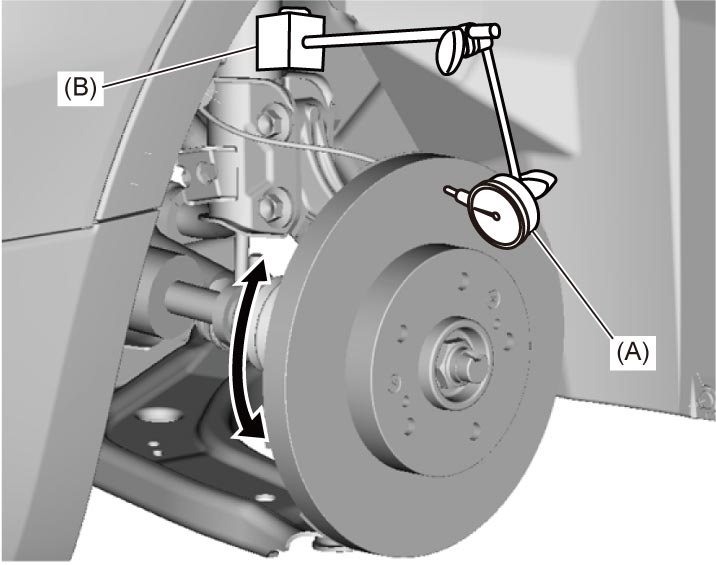
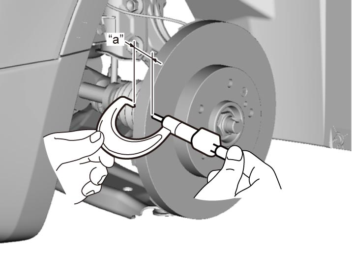

4B
| Front Brake Disc Inspection |
•Using magnetic stand, set dial gauge with prod positioned about 10 mm (0.39 in.) inward from periphery of disc, measure deflection of disc. If it exceeds the limit, correct or replace the front brake disc.
 •Using micrometer, measure thickness of front brake disc. If it is less than limit, replace front brake disc.
•Using micrometer, measure thickness of front brake disc. If it is less than limit, replace front brake disc.
Front brake disc deflection
Limit:
0.10 mm (0.004 in.)

 "Expand image")
Front brake disc thickness
“a”
Standard:
22.0 mm (0.87 in.)
Limit:
20.0 mm (0.79 in.)

 "Expand image")